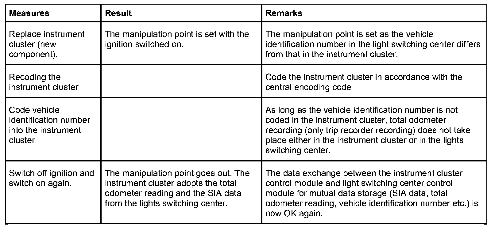
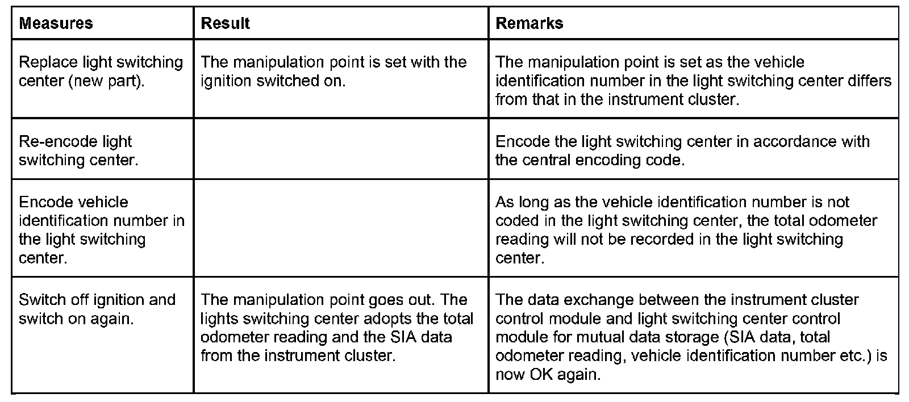
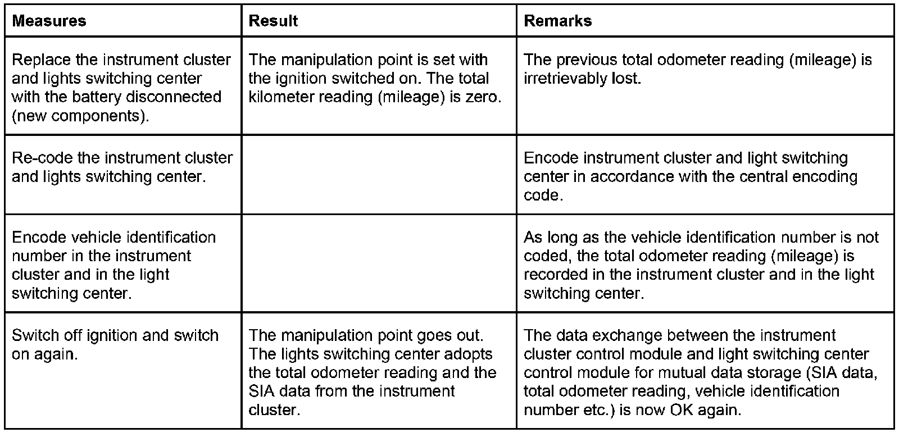
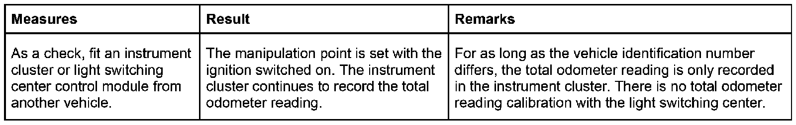
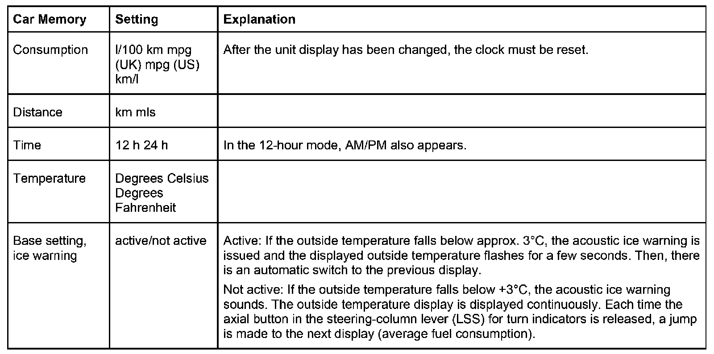
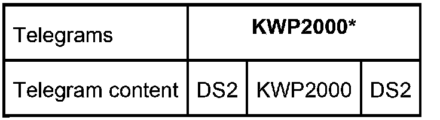

Instrument Cluster : Internal Test Functions & Measures For Replacing Control Modules
Instrument Cluster: Internal Test Functions, Service Interval Display (SIA), Measures For Replacing Control Modules
Alongside other functions, the instrument cluster also contains automatic and manual test functions as well as functions for service tasks.
- The Check Control function monitors the bulbs of the vehicle's exterior lighting.
- The Predrive Check automatically checks the function of important indicator and warning lamps with terminal 15 On.
- The test functions can be used to display coding data and run troubleshooting without a diagnosis tester.
- The Service Interval Display (SIA) (oil service or inspection or periodic service) can display and reset data.
- Following the replacement of control modules - instrument cluster and/or lights switching center (LSZ) - the vehicle identification number must be matched up.
For the checks and settings, all the display options of the instrument cluster are used:
- Pointer instruments
- LC display 1 (in the speedometer)
- LC display 2 (gear display)
- Indicator and warning lamps
The functions are described in the functional description of the instrument cluster: 'Displays and functions'.
Brief description of components
K-bus
The K bus (Body Electronics) is used for data exchange between the control modules of the body electronics and the instrument cluster. Data is exchanged by means of data telegrams.
PT CAN bus
The PT CAN bus (Powertrain CAN bus) is used for data exchange between the engine electronics, the Dynamic Stability Control (DSC) and the instrument cluster. Data is exchanged by means of data telegrams.
D Bus
The D bus (diagnostic bus) is used for data exchange between the instrument cluster and a testing device. Data is exchanged by means of data telegrams.
byteflight
The byteflight is connected to the K bus via the Safety and Information Module (SIM), which acts as a gateway. Via this bus connection, the information from the satellites SBSL and SBSR is transferred to the instrument cluster.
Instrument cluster
The control module, circuits for signal processing, the power supply and operating and display elements are integrated in the instrument cluster.
The instrument cluster has the master function for other equipment attached to the bus and connects as gateway module the PT CAN bus (Powertrain bus), the K bus (Body Electronics bus), the D-bus (diagnostic bus). Information is exchanged by means of data telegrams. The instrument cluster also receives signals directly from sensors.
Encoding data and nonvolatile counter levels are stored in the instrument cluster.
The two buttons S/R (Set/Reset) on the left and the clock symbol (right) can be used to make the following settings:
S/R button
- Resetting the trip-distance recorder
- Operating the SIA reset menu
- Setting the time
- Operating the test functions
Clock symbol button (right):
- Calling up setting time mode
- Calling up SIA service date during display of remaining distance
Steering-column lever (LSS)
The axial button in the steering-column lever (LSS) for the turn indicators can be used to trigger the evaluation of the on-board computer. It can also be used to select the digital clock or outside temperature display.
Lights switching center (LSZ)
The lights switching center (LSZ) switches the lighting of the instrument cluster and controls the brightness of the dial face, pointer and display illumination. The information is transferred by means of data telegrams via the K bus to the instrument cluster.
Main functions
Check Control
The lights switching center (LSZ) monitors as of terminal 15 On the bulbs of the vehicle's exterior lighting. The lights switching center (LSZ) reports a lamp fault as a telegram across the K bus to the instrument cluster. The failure of the following bulbs is indicated by the indicator lamp Check Control (lamp fault):
- Full beam, low beam headlights, sidelights
- Taillights, registration-plate light
- Brake light, left and right
- Rear fog light, left or right
For simplified location of faults, the status is provided via diagnosis and/or test function.
Predrive check
The predrive check is a test for important indicator and warning lamps. With terminal 15 On, the predrive check automatically activates the following indicator and warning lamps.
Display / Symbol Color
Fuel reserve yellow
Coolant high temperature red
Seat belt warning red
Brake pad wear yellow
General brake warning lamp red / yellow
Tire Defect Indicator (RPA) (tire pressure loss) Yellow / red
Oil level / oil pressure yellow / red
Transmission emergency program yellow
Electromechanical power-assisted steering (EPS) yellow
Check Control (lamp faults) yellow
Battery charge indicator lamp red
All the indicator and warning lamps are deactivated together at the end of a fault-free predrive check.
Test functions
The test functions serve to check the coding and to run troubleshooting without the diagnosis tester. The test functions are displayed in the top line of the LC display, display area 1 (distance recorder). The display of the on-board computer function in the bottom line is retained.
NOTE: The test functions can only be run with terminal R On and terminal 15 On with the vehicle stationary and the engine switched off.
The test functions are switched on by
- pressing the S/R button for a longer period (> 5 seconds) with terminal R On and/or terminal 15 On or by
- pressing the S/R button and simultaneously switching on terminal R.
Test functions 1 and 2 are freely accessible. The following test functions can only be reached after they have been unlocked using test function 19. In test function 19, the display alternates every second between L_on (Lock on = lock) and L_oFF (Lock off = unlock).
To unlock the test function:
Press the S/R button if the display shows L_oFF (Lock off = unlock). The display jumps to test function 0 (Exit test function).
To lock the test function:
Press the S/R button if the display shows L_on. Otherwise, always lock the test functions using test function 19.
NOTE: The test functions are always locked after a terminal change.
Quit test functions:
The test functions are closed
- by switching from terminal R Off or
- pressing the S/R button for a longer period or
- requesting test function 21.
Test function table:
Test function Description
_tESt_0._ Exit test function
_tESt_1._ Info-Roll
_tESt_1.0 Vehicle identification number (last 5 digits)
_tESt_1.1 K-number (speed)
_tESt_1.2 BMW part number
_tESt_1.3 Coding, diagnostic bus index
_tESt_1.4 Date of manufacture (calendar week/year)
_tESt_1.5 Hardware version, software version
_tESt_1.6 EEPROM checksum status
_tESt_1.7 CAN index CAN11Hex
_tESt_2._ Visual system test
_tESt_2.1 Display test: All indicator and warning lamps - with the exception of the ABS indicator lamp - and lights are switched on briefly. In the case of pointer movement with step motors, pointer instruments are moved from the lower to the upper stop and back.
_tESt_3._ Data Service Interval Display (SIA)
_tESt_3.0 Liters SIA
_tESt_3.1 Days SIA
_tESt_4._ Current consumption
_tESt_4.0 Current consumption l/100 km
_tESt_4.1 Current consumption, undamped l/h
_tESt_5._ Range
_tESt_5.0 Range consumption l/100 km
_tESt_5.1 Current range km
_tESt_6._ Tank contents
_tESt_6.0 Fuel-tank sensor, left/right, liters
_tESt_6.1 Fuel-tank sensor, total average liters
_tESt_6.2 Fuel gauge, tank phase liters
_tESt_7._ Current displayed values
_tESt_7.0 Coolant temperature degree C
_tESt_7.1 Outside temperature degree C
_tESt_7.2 Engine speed rpm
_tESt_7.3 Speed km/h
_tESt_8._ ADC values
_tESt_8.0 ADC system voltage
_tESt_8.1 ADC fuel-tank sensor left/right
_tESt_8.2 ADC brake-wear sensors
_tESt_8.3 ADC outside temperature sensor
_tESt_9._ System voltage
_tESt_9.0 Vehicle voltage
_tESt_9.1 Voltage of power supply (switching controller)
_tESt_9.2 ADC brake-wear sensors
_tESt_9.3 ADC outside temperature sensor
_tESt_10._ CAN monitor:
_tESt_10.0 DSC
_tESt_10.1 DME
_tESt_10.2 DME4
_tESt_11._ Not assigned
_tESt_12._ Not assigned
_tESt_13._ Test of acoustic sensor
_tESt_13.0 Trigger single tone for test
_tESt_14._ Not assigned
_tESt_15._ I/O ports processor
_tESt_16._ Fault memory
_tESt_16.0 Number of entered faults
_tESt_17._ Not assigned
_tESt_18._ Not assigned
_tESt_19._ Locking and unlocking test functions
_tESt_19.0 Lock on/off
_tESt_20._ Not assigned
_tESt_21.- System (software)
_tESt_21.0 Reset instrument cluster
Redundant data storage
The current service interval display data and the kilometer reading are stored in the control module of the instrument cluster. Parallel to this, the control module for the instrument cluster transmits this data in cycles across the K bus to the lights switching center (LSZ) and the electronic vehicle immobilization unit (EWS) for storage. The data is stored as follows:
- for the odometer, every 100 km,
- for the fuel consumption, every 10 liters
- for the Service Interval days, every day
- with terminal 15 On (RDA status telegram).
The redundant data storage means that the data is retained if control modules are replaced.
The control module for the electronic vehicle immobilization unit (EWS) transfers the data for the new service acceptance concept (Key Reader and SAM 1) to the ignition key.
The control module for the electronic vehicle immobilization unit (EWS) has memory capacity (12 blocks of 16 bytes each) for storage of service-relevant data. In the first four blocks, the following data is stored:
- Kilometer reading
- Service Interval Display
- Vehicle identification number
- Upholstery code
- Color code
With terminal R On and after verification of the key codes, the first four blocks are transferred onto the key (transponder). When driving, if the data of the Service Interval Display in the EWS changes, the data on the key is also updated. When driving, the kilometer reading is updated on the key every 5 minutes.
Key Reader and Service Acceptance Module 1 (SAM 1)
At service reception, the Key Reader can be used to read out the ignition key. As soon as the ignition key has been inserted, the reader picks up the stored vehicle data. Depending on the vehicle model, the information is shown on a shield using the Service Acceptance Module 1 (SAM 1).
The Service Acceptance Module 1 (SAM 1) can automatically interpret and display the data picked up by the Key Reader and forward it to scheduling and/or order opening.
On the SAM 1 mask SIA IV, only forwarding of the order basis to the downstream system (DMS) is implemented. The following data is displayed in the SAM 1 mask SIA IV:
- Key version
- Read-in date
- Due (inspection or oil service)
- Service remaining distance (in kilometers)
- Kilometer reading
- Upholstery code
- Color code
- Type code
- Vehicle identification number
Replacing the instrument cluster
The scope of functions of the instrument cluster is determined by the coding data stored in a non-volatile data memory. The coding data is retained even if the voltage supply is disconnected. If the instrument cluster is to be replaced, various measures must be carried out depending on the reasons that led to the replacement. The following four cases show the procedures.
Case 1: The instrument cluster control module is defective and the light switching center (LSZ) is OK.

Case 2: The instrument cluster control module is OK and the light switching center (LSZ) is defective.

Case 3: The control module for the instrument cluster and the control module for the light switching center (LSZ) must be replaced.
NOTE:
- Only replace control modules at the same time if this is unavoidable (stored total odometer reading is irretrievably lost).
- Disconnect battery!

Case 4: As a check, replace the control module for the instrument cluster or the light switching center control module (LSZ).
NOTE: Although exchanging one of the two control modules as a test is possible in principle, it should be avoided wherever possible.

NOTE: Simultaneous replacement of the instrument cluster and lights switching center (LSZ) should be avoided. The total odometer reading (mileage) is irretrievably lost.
Car and Key Memory
Display of the Car Memory functions:

Notes for Service department
- When the instrument cluster is replaced, the mileage is re-imported by the lights switching center (LSZ) and the original kilometer reading / mileage is recovered.
NOTE: This function is only permitted with new parts < 255 km.
- The following functions are described in the functional description of the instrument cluster: 'Displays and functions'
- Redundant data storage
- Brightness control of the instrument cluster
Country-specific version
In the case of vehicles for the markets USA, Canada and Japan, only the remaining distance is displayed in the SIA. The periodic service has been coded out; the clock symbol does not appear.
Diagnosis
On the E85, DS2 (diagnosis interface 2) is used as the diagnosis language for diagnosis communication. So that control modules that use KWP2000 (Key Word Protocol 2000) for diagnosis can be used, the E85 has KWP2000*.
KWP2000 is a protocol for diagnosis standardized by the automobile industry.
In KWP2000*, KWP2000 has been integrated in the diagrams of the DS2.
